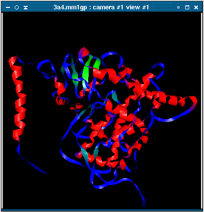

Ghemical can produce a ribbon model of a polypeptide. In this model, a ribbon is drawn along the polypeptide backbone of the protein, parallel to the peptide plane. Ghemical will detect the secondary structure of the protein and colour the ribbon accordingly:
The width of the ribbon is increased in helicies and strands. Typically, you will change the rendering of the molecule to Nothing using the ribbon model so that you can see the ribbon without the interference from ball-and-stick model of the protein. It is also much faster to view and change the perspective of the ribbon model, rather than the fully rendered protein. It can take a considerable length of time make a ribbon object of a large protein.
This is a ribbon model of Cytochrome P450 3A4 (CYP3A4) generated in ghemical, based on the consensus structure modeled by Szklarz and Halpert (Szklarz and Halpert, 1997).
